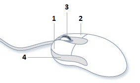

Windows supports mice with up to five buttons: left, middle, and right, plus two additional buttons called XBUTTON1 and XBUTTON2.

Most mice for Windows have at least the left and right buttons. The left mouse button is used for pointing, selecting, dragging, and so forth. The right mouse button typically displays a context menu. Some mice have a scroll wheel located between the left and right buttons. Depending on the mouse, the scroll wheel might also be clickable, making it the middle button.
The XBUTTON1 and XBUTTON2 buttons are often located on the sides of the mouse, near the base. These extra buttons are not present on all mice. If present, the XBUTTON1 and XBUTTON2 buttons are often mapped to an application function, such as forward and backward navigation in a Web browser.
Left-handed users often find it more comfortable to swap the functions of the left and right buttons—using the right button as the pointer, and the left button to show the context menu. For this reason, the Windows help documentation uses the terms primary button and secondary button, which refer to logical function rather than physical placement. In the default (right-handed) setting, the left button is the primary button and the right is the secondary button. However, the terms right click and left click refer to logical actions. Left clicking means clicking the primary button, whether that button is physically on the right or left side of the mouse.
Regardless of how the user configures the mouse, Windows automatically translates mouse messages so they are consistent. The user can swap the primary and secondary buttons in the middle of using your program, and it will not affect how your program behaves.
The terms left button and right button are sometimes used instead of primary and secondary buttons, respectively. This terminology is consistent with the names of the window messages for mouse input. Just remember that the physical left and right buttons might be swapped.
Â
Â